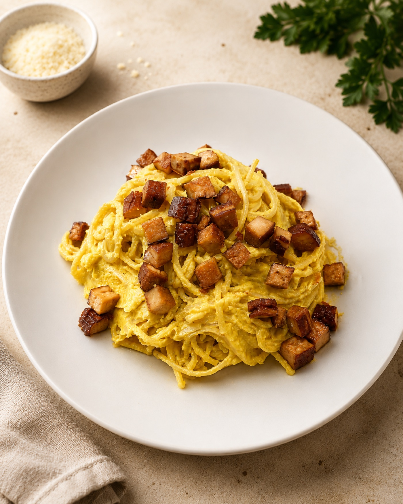
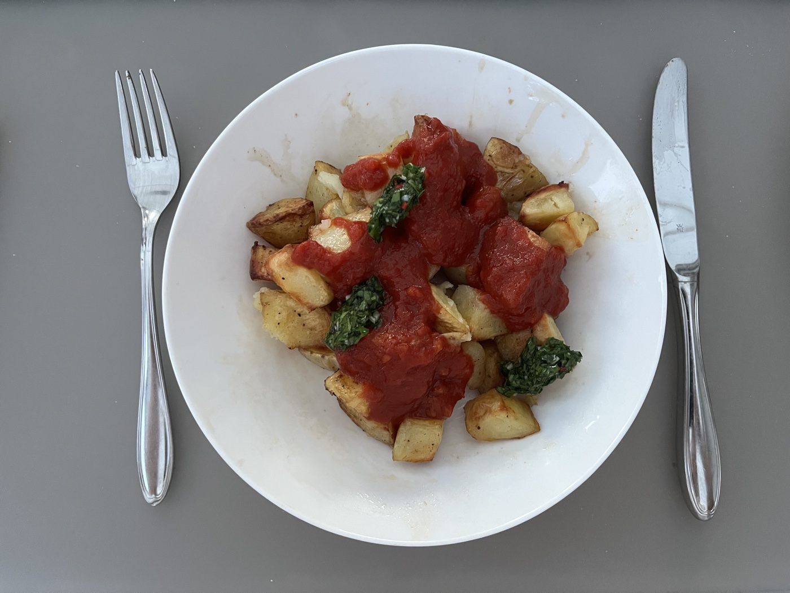
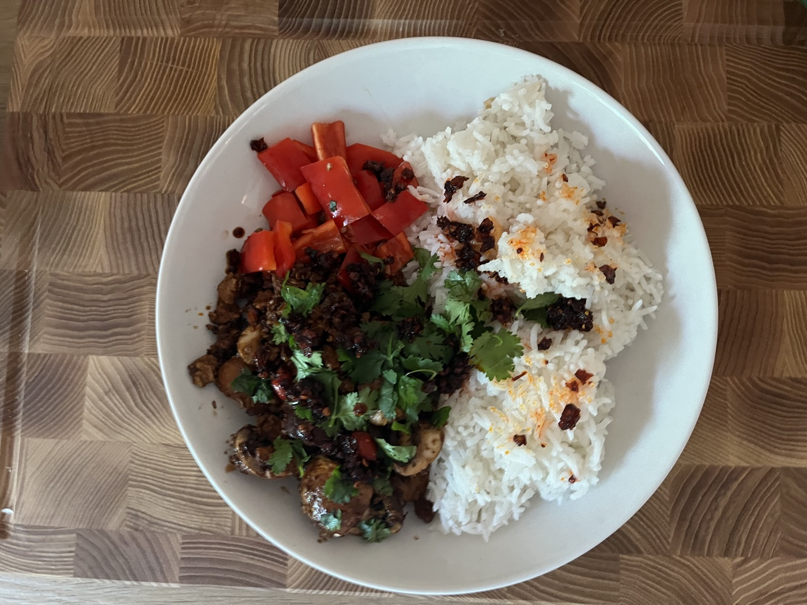

Jedes Rezept ist in zwei parallele Teile aufgeteilt. Jede Person öffnet das Rezept auf ihrem Gerät, wählt eine Rolle — und sieht nur ihre eigenen Schritte. Am Ende richtet ihr gemeinsam an.



Was wir gerade entwickeln, kochen, fotografieren — und bald veröffentlichen. Der Blog wächst weiter.